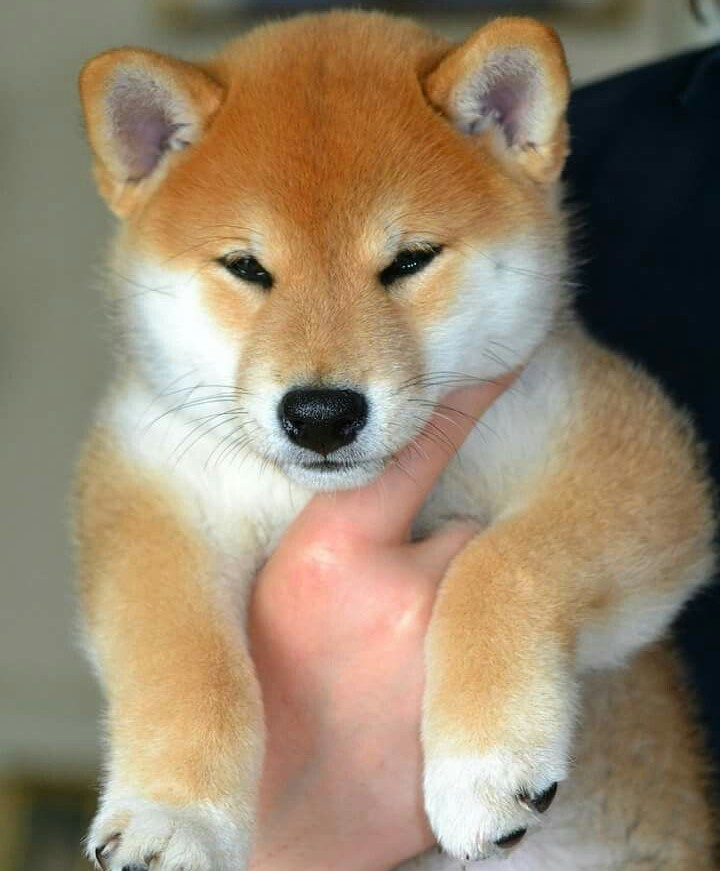
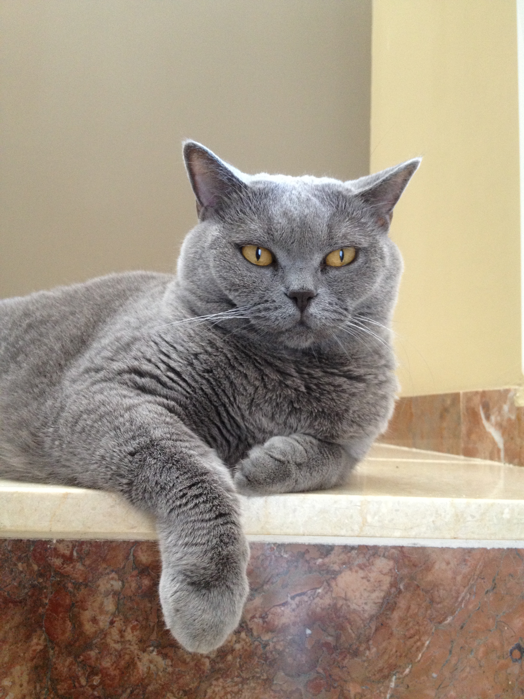
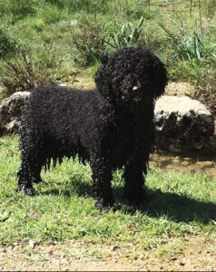
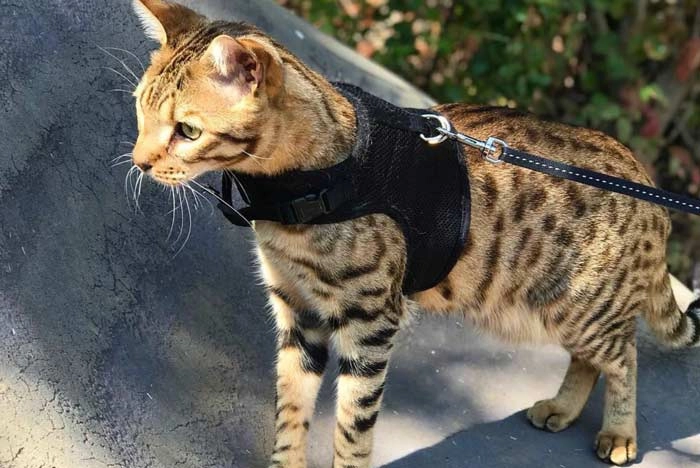
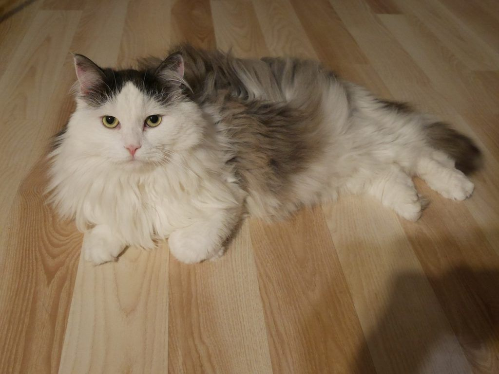
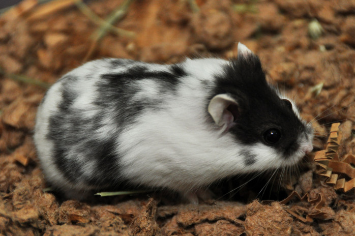
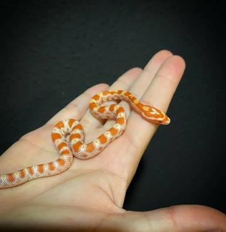

Aqui os vamos a presentar distintas mascotas que no tienen dueño y
estan en nuestra tienda para que quien quiera pueda venir y adoptarlas
Piensa en darle una segunda oportunidad a unos animales que tuvieron mala suerte,
seguro que ellos te lo agradecerán
Descripción del apartado
Mascotas
| Imágenes | Características |
|---|---|
|  |
Detalles Raza: Shiba Inu Genero: masculino Tamaño: 25 cm Edad: 5 meses |
|  |
Detalles Raza: British Shorthair Genero: femenino Tamaño: 30 cm Edad: 3 años |
 |
Detalles Raza: Husky Siberiano Genero: masculino Tamaño: 26 cm Edad: 2 meses y medio |
|  |
Detalles Raza: Perro de agua Genero: femenino Tamaño: 47 cm Edad: 1 año y 3 meses |
|  |
Detalles Raza: Savannah Genero: femenino Tamaño: 40 cm Edad: 1 año |
|  |
Detalles Raza: Siberiano Genero: masculino Tamaño: 27 cm Edad: 2 años |
|  |
Detalles Raza: Ruso Genero: femenino Tamaño: 8 cm Edad: 4 meses |
|  |
Detalles Raza: Maíz Genero: femenino Tamaño: 50 cm Edad: 6 meses |